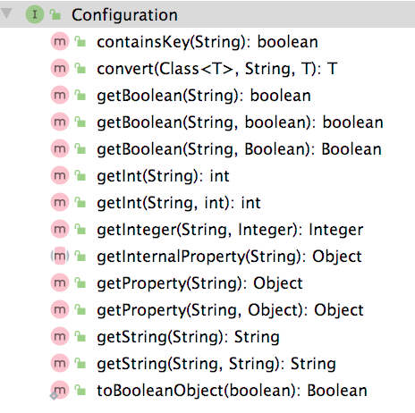
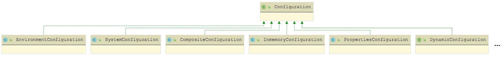
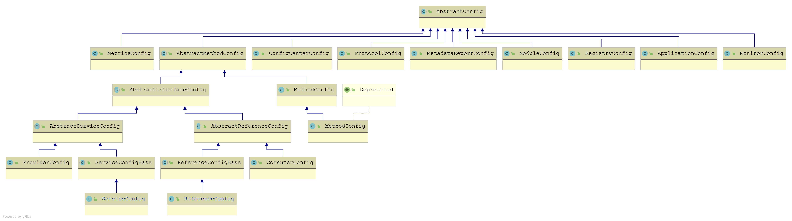
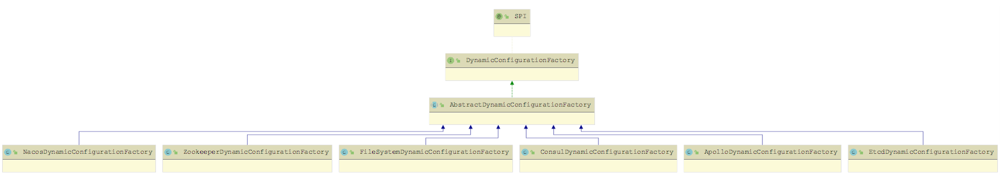
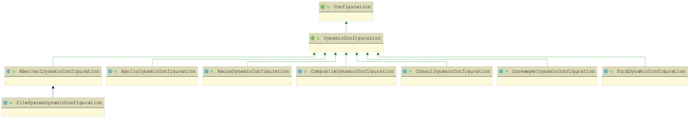
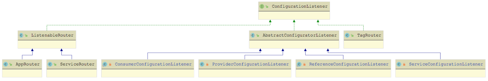
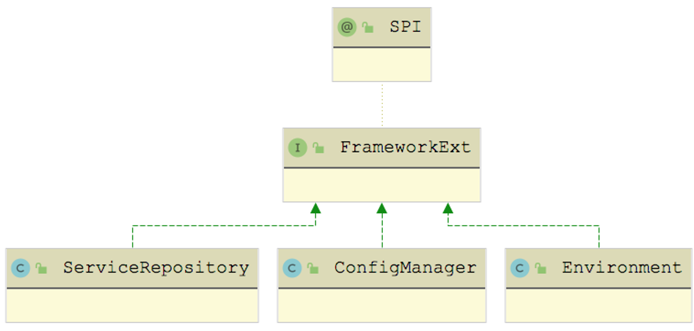
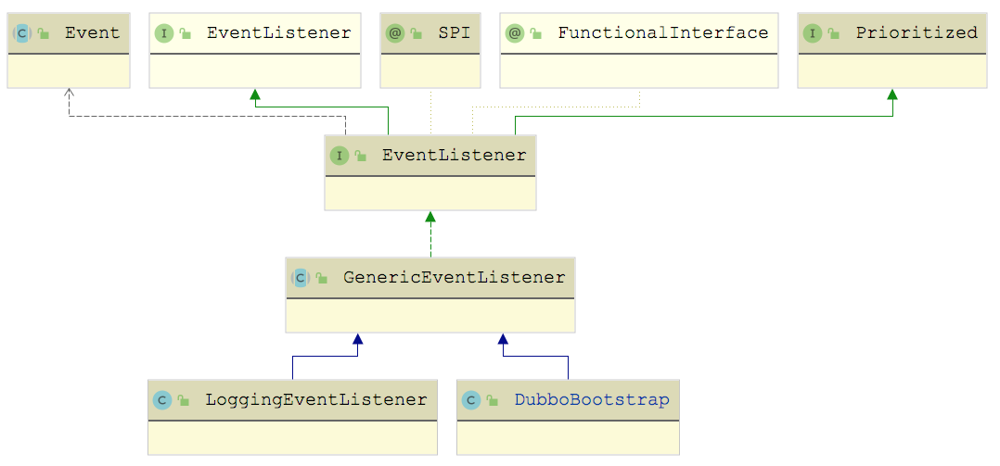
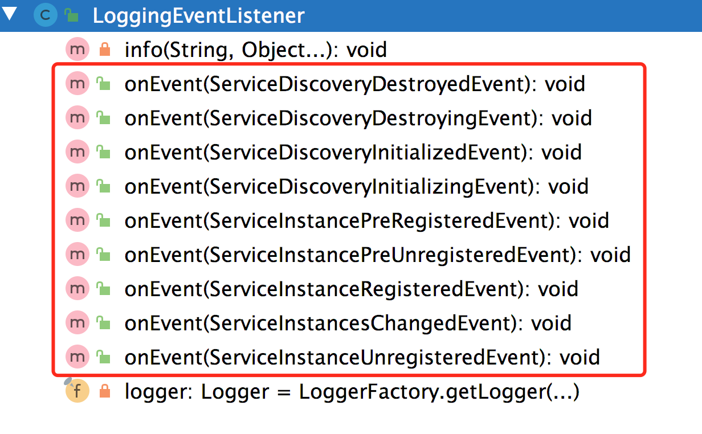

Dubbo从 2.7.0 版本开始正式支持配置中心，在服务自省架构中也依赖配置中心完成 Service ID 与 Service Name 的映射。配置中心在 Dubbo 中主要承担两个职责：
外部化配置：目的之一是实现配置的集中式管理，目前已经有很多成熟的专业配置管理系统（例如，携程开源的 Apollo、阿里开源的 Nacos 等），Dubbo 配置中心的目的不是”重复造轮子”，而是保证 Dubbo 能与这些成熟的配置管理系统一起正常工作；
服务治理：负责服务治理规则的存储与通知。
Dubbo 可以同时支持多种配置来源。在Dubbo初始化过程中，会从多个来源获取配置，并按照固定的优先级将这些配置整合起来，实现 高优先级的配置覆盖低优先级配置 的效果。这些配置的汇总结果将会参与形成 URL，以及后续的服务发布和服务引用。
Dubbo 目前支持下面四种配置来源，优先级由 1 到 4 逐级降低：
System Properties，即-D 参数；
外部化配置，也就是本章要介绍的配置中心；
API 接口、注解、XML 配置等编程方式收到的配置，最终得到 ServiceConfig、ReferenceConfig 等对象；
本地 dubbo.properties 配置文件。

从上图中可以看到，Configuration 针对不同的 boolean、int、String 返回值都有对应的 get() 方法，同时还提供了带有默认值的 get() 方法。这些 get() 方法底层首先调用 getInternalProperty() 方法获取配置值，然后调用 convert() 方法将获取到的配置值转换成返回值的类型之后返回。
下图展示了 Dubbo 中提供的 Configuration 接口实现，包括：SystemConfiguration、EnvironmentConfiguration、InmemoryConfiguration、PropertiesConfiguration、CompositeConfiguration、ConfigConfigurationAdapter 和 DynamicConfiguration。下面我将结合具体代码逐个介绍其实现。

SystemConfiguration 是从 Java Properties 配置（也就是 -D 配置参数）中获取相应的配置项，EnvironmentConfiguration 是从使用环境变量中获取相应的配置。两者的 getInternalProperty() 方法实现如下：
x1public class SystemConfiguration implements Configuration {2 public Object getInternalProperty(String key) {3 return System.getProperty(key); // 读取-D配置参数4 }5}6
7public class EnvironmentConfiguration implements Configuration {8 public Object getInternalProperty(String key) {9 String value = System.getenv(key);10 if (StringUtils.isEmpty(value)) {11 // 读取环境变量中获取相应的配置12 value = System.getenv(StringUtils.toOSStyleKey(key));13 }14 return value;15 }16}InmemoryConfiguration 会在内存中维护一个 Map 集合（store 字段），其 getInternalProperty() 方法的实现就是从 store 集合中获取对应配置值：
101// InmemoryConfiguration.java2
3public class InmemoryConfiguration implements Configuration {4 private Map<String, String> store = new LinkedHashMap<>();5 6 public Object getInternalProperty(String key) {7 return store.get(key);8 }9 // 省略addProperty()等写入store集合的方法10}PropertiesConfiguration 涉及 OrderedPropertiesProvider，其接口的定义如下：
91// OrderedPropertiesProvider.java2
3public interface OrderedPropertiesProvider {5 // 用于排序6 int priority();7 // 获取Properties配置8 Properties initProperties();9} 在 PropertiesConfiguration 的构造方法中，会加载 OrderedPropertiesProvider 接口的全部扩展实现，并按照 priority() 方法进行排序。然后，加载默认的 dubbo.properties.file 配置文件。最后，用 OrderedPropertiesProvider 中提供的配置覆盖 dubbo.properties.file 文件中的配置。
PropertiesConfiguration 的构造方法的具体实现如下：
281// PropertiesConfiguration.java2
3public PropertiesConfiguration() {4 // 获取OrderedPropertiesProvider接口的全部扩展名称5 ExtensionLoader<OrderedPropertiesProvider> propertiesProviderExtensionLoader = ExtensionLoader.getExtensionLoader(OrderedPropertiesProvider.class);6 Set<String> propertiesProviderNames = propertiesProviderExtensionLoader.getSupportedExtensions();7 if (propertiesProviderNames == null || propertiesProviderNames.isEmpty()) {8 return;9 }10 // 加载OrderedPropertiesProvider接口的全部扩展实现11 List<OrderedPropertiesProvider> orderedPropertiesProviders = new ArrayList<>();12 for (String propertiesProviderName : propertiesProviderNames) {13 orderedPropertiesProviders.add(propertiesProviderExtensionLoader.getExtension(propertiesProviderName));14 }15 // 排序OrderedPropertiesProvider接口的扩展实现16 orderedPropertiesProviders.sort((OrderedPropertiesProvider a, OrderedPropertiesProvider b) -> {17 return b.priority() - a.priority();18 });19 // 加载默认的dubbo.properties.file配置文件，加载后的结果记录在ConfigUtils.PROPERTIES这个static字段中20 Properties properties = ConfigUtils.getProperties();21 // 使用OrderedPropertiesProvider扩展实现，按序覆盖dubbo.properties.file配置文件中的默认配置22 for (OrderedPropertiesProvider orderedPropertiesProvider :23 orderedPropertiesProviders) {24 properties.putAll(orderedPropertiesProvider.initProperties());25 }26 // 更新ConfigUtils.PROPERTIES字段27 ConfigUtils.setProperties(properties);28} 在 PropertiesConfiguration.getInternalProperty() 方法中，直接从 ConfigUtils.PROPERTIES 这个 Properties 中获取覆盖后的配置信息：
51// PropertiesConfiguration.java2
3public Object getInternalProperty(String key) {4 return ConfigUtils.getProperty(key);5}CompositeConfiguration 是一个复合的 Configuration 对象， 其核心就是将多个 Configuration 对象组合起来，对外表现为一个 Configuration 对象 。
CompositeConfiguration 组合的 Configuration 对象都保存在 configList 字段中（LinkedList<Configuration> 集合），CompositeConfiguration 提供了 addConfiguration() 方法用于向 configList 集合中添加 Configuration 对象，如下所示：
81// CompositeConfiguration.java2
3public void addConfiguration(Configuration configuration) {4 if (configList.contains(configuration)) {5 return; // 不会重复添加同一个Configuration对象6 }7 this.configList.add(configuration);8}在 CompositeConfiguration 中维护了一个 prefix 字段和 id 字段，两者可以作为 Key 的前缀进行查询，在 getProperty() 方法中的相关代码如下：
191// CompositeConfiguration.java2
3public Object getProperty(String key, Object defaultValue) {4 Object value = null;5 if (StringUtils.isNotEmpty(prefix)) { // 检查prefix6 if (StringUtils.isNotEmpty(id)) { // 检查id7 // prefix和id都作为前缀，然后拼接key进行查询8 value = getInternalProperty(prefix + id + "." + key);9 }10 if (value == null) {11 // 只把prefix作为前缀，拼接key进行查询12 value = getInternalProperty(prefix + key);13 }14 } else {15 // 若prefix为空，则直接用key进行查询16 value = getInternalProperty(key);17 }18 return value != null ? value : defaultValue;19}在 getInternalProperty() 方法中，会按序遍历 configList 集合中的全部 Configuration 查询对应的 Key，返回第一个成功查询到的 Value 值，如下示例代码：
201// CompositeConfiguration.java2
3public Object getInternalProperty(String key) {4 Configuration firstMatchingConfiguration = null;5 for (Configuration config : configList) { // 遍历所有Configuration对象6 try {7 if (config.containsKey(key)) { // 得到第一个包含指定Key的Configuration对象8 firstMatchingConfiguration = config; 9 break;10 }11 } catch (Exception e) {12 logger.error("...");13 }14 }15 if (firstMatchingConfiguration != null) { // 通过该Configuration查询Key并返回配置值16 return firstMatchingConfiguration.getProperty(key);17 } else {18 return null;19 }20}Dubbo 通过 AbstractConfig 类来抽象实例对应的配置，如下图所示：

这些 AbstractConfig 实现基本都对应一个固定的配置，也定义了配置对应的字段以及 getter/setter() 方法。例如，RegistryConfig 这个实现类就对应了注册中心的相关配置，其中包含了 address、protocol、port、timeout 等一系列与注册中心相关的字段以及对应的 getter/setter() 方法，来接收用户通过 XML、Annotation 或是 API 方式传入的注册中心配置。
ConfigConfigurationAdapter 是 AbstractConfig 与 Configuration 之间的适配器 ，它会将 AbstractConfig 对象转换成 Configuration 对象。在 ConfigConfigurationAdapter 的构造方法中会获取 AbstractConfig 对象的全部字段，并转换成一个 Map 集合返回，该 Map 集合将会被 ConfigConfigurationAdapter 的 metaData 字段引用。相关示例代码如下：
131// ConfigConfigurationAdapter.java2
3public ConfigConfigurationAdapter(AbstractConfig config) {4 // 获取该AbstractConfig对象中的全部字段与字段值的映射5 Map<String, String> configMetadata = config.getMetaData();6 metaData = new HashMap<>(configMetadata.size());7 // 根据AbstractConfig配置的prefix和id，修改metaData集合中Key的名称8 for (Map.Entry<String, String> entry : configMetadata.entrySet()) {9 String prefix = config.getPrefix().endsWith(".") ? config.getPrefix() : config.getPrefix() + ".";10 String id = StringUtils.isEmpty(config.getId()) ? "" : config.getId() + ".";11 metaData.put(prefix + id + entry.getKey(), entry.getValue());12 }13}在 ConfigConfigurationAdapter 的 getInternalProperty() 方法实现中，直接从 metaData 集合中获取配置值即可，如下所示：
51// ConfigConfigurationAdapter.java2
3public Object getInternalProperty(String key) {4 return metaData.get(key);5}DynamicConfiguration 是对 Dubbo 中动态配置的抽象，其核心方法有下面三类：
getProperties()/ getConfig() / getProperty() 方法：从配置中心获取指定的配置，在使用时，可以指定一个超时时间；
addListener()/ removeListener() 方法：添加或删除对指定配置的监听器；
publishConfig() 方法：发布一条配置信息。
在上述三类方法中，每个方法都用多个重载，其中，都会包含一个带有 group 参数的重载，也就是说 配置中心的配置可以按照 group 进行分组 。
与 Dubbo 中很多接口类似，DynamicConfiguration 接口本身不被 @SPI 注解修饰（即不是一个扩展接口）， 而是在 DynamicConfigurationFactory 上添加了 @SPI 注解，使其成为一个扩展接口 。
在 DynamicConfiguration 中提供了 getDynamicConfiguration() 静态方法，该方法会从传入的配置中心 URL 参数中，解析出协议类型并获取对应的 DynamicConfigurationFactory 实现，如下所示：
71// DynamicConfiguration.java2
3static DynamicConfiguration getDynamicConfiguration(URL connectionURL) {4 String protocol = connectionURL.getProtocol();5 DynamicConfigurationFactory factory = getDynamicConfigurationFactory(protocol);6 return factory.getDynamicConfiguration(connectionURL);7}DynamicConfigurationFactory 接口的定义如下：
121// DynamicConfigurationFactory.java2
3("nop") 4public interface DynamicConfigurationFactory {5 DynamicConfiguration getDynamicConfiguration(URL url);6 static DynamicConfigurationFactory getDynamicConfigurationFactory(String name) {7 // 根据扩展名称获取DynamicConfigurationFactory实现8 Class<DynamicConfigurationFactory> factoryClass = DynamicConfigurationFactory.class;9 ExtensionLoader<DynamicConfigurationFactory> loader = getExtensionLoader(factoryClass);10 return loader.getOrDefaultExtension(name);11 }12}DynamicConfigurationFactory 接口的继承关系以及 DynamicConfiguration 接口对应的继承关系如下：


我们先来看 AbstractDynamicConfigurationFactory 的实现，其中会维护一个 dynamicConfigurations 集合（Map<String, DynamicConfiguration> 类型），在 getDynamicConfiguration() 方法中会填充该集合，实现 缓存 DynamicConfiguration 对象的效果。同时，AbstractDynamicConfigurationFactory 提供了一个 createDynamicConfiguration() 方法给子类实现，来 创建 DynamicConfiguration 对象。
以 ZookeeperDynamicConfigurationFactory 实现为例，其 createDynamicConfiguration() 方法创建的就是 ZookeeperDynamicConfiguration 对象：
61// ZookeeperDynamicConfigurationFactory.java2
3protected DynamicConfiguration createDynamicConfiguration(URL url) {4 // 这里创建ZookeeperDynamicConfiguration使用的ZookeeperTransporter就是前文在Transport层中针对Zookeeper的实现5 return new ZookeeperDynamicConfiguration(url, zookeeperTransporter);6}接下来我们再以 ZookeeperDynamicConfiguration 为例，分析 DynamicConfiguration 接口的具体实现。首先来看 ZookeeperDynamicConfiguration 的核心字段：
executor（Executor 类型）：用于执行监听器的线程池；
rootPath（String 类型）：以 Zookeeper 作为配置中心时，配置也是以 ZNode 形式存储的，rootPath 记录了所有配置节点的根路径；
zkClient（ZookeeperClient 类型）：与 Zookeeper 集群交互的客户端；
initializedLatch（CountDownLatch 类型）：阻塞等待 ZookeeperDynamicConfiguration 相关的监听器注册完成；
cacheListener（CacheListener 类型）：用于监听配置变化的监听器；
url（URL 类型）：配置中心对应的 URL 对象。
在 ZookeeperDynamicConfiguration 的构造函数中，会 初始化上述核心字段 ，具体实现如下：
311// ZookeeperDynamicConfiguration.java2
3ZookeeperDynamicConfiguration(URL url, ZookeeperTransporter zookeeperTransporter) {4 this.url = url;5 // 根据URL中的config.namespace参数(默认值为dubbo)，确定配置中心ZNode的根路径6 rootPath = PATH_SEPARATOR + url.getParameter(CONFIG_NAMESPACE_KEY, DEFAULT_GROUP) + "/config";7
8 // 初始化initializedLatch以及cacheListener，在cacheListener注册成功之后，会调用cacheListener.countDown()方法9 initializedLatch = new CountDownLatch(1);10 this.cacheListener = new CacheListener(rootPath, initializedLatch);11
12 // 初始化executor字段，用于执行监听器的逻辑13 this.executor = Executors.newFixedThreadPool(1, new NamedThreadFactory(this.getClass().getSimpleName(), true));14
15 // 初始化Zookeeper客户端16 zkClient = zookeeperTransporter.connect(url);17
18 // 在rootPath上添加cacheListener监听器19 zkClient.addDataListener(rootPath, cacheListener, executor);20 try {21 // 从URL中获取当前线程阻塞等待Zookeeper监听器注册成功的时长上限22 long timeout = url.getParameter("init.timeout", 5000);23 // 阻塞当前线程，等待监听器注册完成24 boolean isCountDown = this.initializedLatch.await(timeout, TimeUnit.MILLISECONDS);25 if (!isCountDown) {26 throw new IllegalStateException("...");27 }28 } catch (InterruptedException e) {29 logger.warn("...");30 }31}在上述初始化过程中，ZookeeperDynamicConfiguration 会创建 CacheListener 监听器。在前面章节中，我介绍了 dubbo-remoting-zookeeper 对外提供了 StateListener、DataListener 和 ChildListener 三种类型的监听器。 这里的 CacheListener 就是 DataListener 监听器的具体实现 。
在 CacheListener 中维护了一个 Map 集合（keyListeners 字段）用于记录所有添加的 ConfigurationListener 监听器，其中 Key 是配置信息在 Zookeeper 中存储的 path，Value 为该 path 上的监听器集合。当某个配置项发生变化的时候，CacheListener 会从 keyListeners 中获取该配置对应的 ConfigurationListener 监听器集合，并逐个进行通知。
该逻辑是在 CacheListener 的 dataChanged() 方法中实现的：
401// CacheListener.java2
3public void dataChanged(String path, Object value, EventType eventType) {4 if (eventType == null) {5 return;6 }7 if (eventType == EventType.INITIALIZED) {8 // 在收到INITIALIZED事件的时候，表示CacheListener已经成功注册，会释放阻塞在initializedLatch上的主线程9 initializedLatch.countDown();10 return;11 }12 if (path == null || (value == null && eventType != EventType.NodeDeleted)) {13 return;14 }15
16 if (path.split("/").length >= MIN_PATH_DEPTH) { // 对path层数进行过滤17 String key = pathToKey(path); // 将path中的"/"替换成"."18 ConfigChangeType changeType;19 switch (eventType) { // 将Zookeeper中不同的事件转换成不同的ConfigChangedEvent事件20 case NodeCreated:21 changeType = ConfigChangeType.ADDED;22 break;23 case NodeDeleted:24 changeType = ConfigChangeType.DELETED;25 break;26 case NodeDataChanged:27 changeType = ConfigChangeType.MODIFIED;28 break;29 default:30 return;31 }32 // 使用ConfigChangedEvent封装触发事件的Key、Value、配置group以及事件类型33 ConfigChangedEvent configChangeEvent = new ConfigChangedEvent(key, getGroup(path), (String) value, changeType);34 // 从keyListeners集合中获取对应的ConfigurationListener集合，然后逐一进行通知35 Set<ConfigurationListener> listeners = keyListeners.get(path);36 if (CollectionUtils.isNotEmpty(listeners)) {37 listeners.forEach(listener -> listener.process(configChangeEvent));38 }39 }40}CacheListener 中调用的监听器都是 ConfigurationListener 接口实现，如下图所示，这里前面章节介绍的 TagRouter、AppRouter 和 ServiceRouter，它们主要是监听路由配置的变化；还涉及 RegistryDirectory 和 RegistryProtocol 中的四个内部类（AbstractConfiguratorListener 的子类），它们主要监听 Provider 和 Consumer 的配置变化。

这些 ConfigurationListener 实现在前面的课程中已经详细介绍过了，这里就不再重复。ZookeeperDynamicConfiguration 中还提供了 addListener()、removeListener() 两个方法用来增删 ConfigurationListener 监听器，具体实现比较简单，这里就不再赘述。
介绍完 ZookeeperDynamicConfiguration 的初始化过程之后，我们再来看 ZookeeperDynamicConfiguration 中 读取配置、写入配置 的相关操作。相关方法的实现如下：
131// ZookeeperDynamicConfiguration.java2
3public Object getInternalProperty(String key) {4 // 直接从Zookeeper中读取对应的Key5 return zkClient.getContent(key);6}7public boolean publishConfig(String key, String group, String content) {8 // getPathKey()方法中会添加rootPath和group两部分信息到Key中9 String path = getPathKey(group, key);10 // 在Zookeeper中创建对应ZNode节点用来存储配置信息11 zkClient.create(path, content, false);12 return true;13}在 DubboBootstrap 初始化的过程中，会调用 ApplicationModel.initFrameworkExts() 方法初始化所有 FrameworkExt 接口实现，继承关系如下图所示：

81// FrameworkExt.java2
3public static void initFrameworkExts() {4 Set<FrameworkExt> exts = ExtensionLoader.getExtensionLoader(FrameworkExt.class).getSupportedExtensionInstances();5 for (FrameworkExt ext : exts) {6 ext.initialize();7 }8}ConfigManager 用于管理当前 Dubbo 节点中全部 AbstractConfig 对象，其中就包括 ConfigCenterConfig 这个实现的对象，我们通过 XML、Annotation 或是 API 方式添加的配置中心的相关信息（例如，配置中心的地址、端口、协议等），会转换成 ConfigCenterConfig 对象。
Environment 中维护了多个 Configuration 对象 ，具体含义如下。
propertiesConfiguration（PropertiesConfiguration 类型）：全部 OrderedPropertiesProvider 实现提供的配置以及环境变量或是 -D 参数中指定配置文件的相关配置信息；
systemConfiguration（SystemConfiguration 类型）：-D 参数配置直接添加的配置信息；
environmentConfiguration（EnvironmentConfiguration 类型）：环境变量中直接添加的配置信息；
externalConfiguration、appExternalConfiguration（InmemoryConfiguration 类型）：使用 Spring 框架且将 include-spring-env 配置为 true 时，会自动从 Spring Environment 中读取配置。默认依次读取 key 为 dubbo.properties 和 application.dubbo.properties 到这里两个 InmemoryConfiguration 对象中；
globalConfiguration（CompositeConfiguration 类型）：用于组合上述各个配置来源；
dynamicConfiguration（CompositeDynamicConfiguration 类型）：用于组合当前全部的配置中心对应的 DynamicConfiguration。
configCenterFirst（boolean 类型）：用于标识配置中心的配置是否为最高优先级。
在 Environment 的构造方法中会初始化上述 Configuration 对象，在 initialize() 方法中会将从 Spring Environment 中读取到的配置填充到 externalConfiguration 以及 appExternalConfiguration 中。相关的实现片段如下：
231// Environment.java2
3public Environment() {4 // 创建上述Configuration对象5 this.propertiesConfiguration = new PropertiesConfiguration();6 this.systemConfiguration = new SystemConfiguration();7 this.environmentConfiguration = new EnvironmentConfiguration();8 this.externalConfiguration = new InmemoryConfiguration();9 this.appExternalConfiguration = new InmemoryConfiguration();10}11public void initialize() throws IllegalStateException {12 // 读取对应配置，填充上述Configuration对象13 ConfigManager configManager = ApplicationModel.getConfigManager();14 Optional<Collection<ConfigCenterConfig>> defaultConfigs = configManager.getDefaultConfigCenter();15 defaultConfigs.ifPresent(configs -> {16 for (ConfigCenterConfig config : configs) {17 this.setExternalConfigMap(config.getExternalConfiguration());18 this.setAppExternalConfigMap(config.getAppExternalConfiguration());19 }20 });21this.externalConfiguration.setProperties(externalConfigurationMap);22 this.appExternalConfiguration.setProperties(appExternalConfigurationMap);23}完成了 Environment 的初始化之后，DubboBootstrap 接下来会调用 startConfigCenter() 方法启动一个或多个配置中心客户端，核心操作有两个：
调用 ConfigCenterConfig.refresh() 方法刷新配置中心的相关配置；
通过 prepareEnvironment() 方法，根据 ConfigCenterConfig 中的配置创建 DynamicConfiguration 对象。
241// DubboBootstrap.java2
3private void startConfigCenter() {4 Collection<ConfigCenterConfig> configCenters = configManager.getConfigCenters();5 if (CollectionUtils.isEmpty(configCenters)) { // 未指定配置中心6 ... ... // 省略该部分逻辑7 } else {8 for (ConfigCenterConfig configCenterConfig : configCenters) { // 可能配置了多个配置中心9 configCenterConfig.refresh(); // 刷新配置10 // 检查配置中心的配置是否合法 ConfigValidationUtils.validateConfigCenterConfig(configCenterConfig);11 }12 }13 if (CollectionUtils.isNotEmpty(configCenters)) {14 // 创建CompositeDynamicConfiguration对象，用于组装多个DynamicConfiguration对象15 CompositeDynamicConfiguration compositeDynamicConfiguration = new CompositeDynamicConfiguration();16 for (ConfigCenterConfig configCenter : configCenters) {17 // 根据ConfigCenterConfig创建相应的DynamicConfig对象，并添加到CompositeDynamicConfiguration中18compositeDynamicConfiguration.addConfiguration(prepareEnvironment(configCenter));19 }20 // 将CompositeDynamicConfiguration记录到Environment中的dynamicConfiguration字段21 environment.setDynamicConfiguration(compositeDynamicConfiguration);22 }23 configManager.refreshAll(); // 刷新所有AbstractConfig配置24}首先来看 ConfigCenterConfig.refresh() 方法，该方法会组合 Environment 对象中全部已初始化的 Configuration，然后遍历 ConfigCenterConfig 中全部字段的 setter 方法，并从 Environment 中获取对应字段的最终值。具体实现如下：
301// ConfigCenterConfig.java2
3public void refresh() {4 // 获取Environment对象5 Environment env = ApplicationModel.getEnvironment();6 // 将当前已初始化的所有Configuration合并返回7 CompositeConfiguration compositeConfiguration = env.getPrefixedConfiguration(this);8 Method[] methods = getClass().getMethods();9 for (Method method : methods) {10 if (MethodUtils.isSetter(method)) { // 获取ConfigCenterConfig中各个字段的setter方法11 // 根据配置中心的相关配置以及Environment中的各个Configuration，获取该字段的最终值12 String value = StringUtils.trim(compositeConfiguration.getString(extractPropertyName(getClass(), method)));13 // 调用setter方法更新ConfigCenterConfig的相应字段14 if (StringUtils.isNotEmpty(value) && ClassUtils.isTypeMatch(method.getParameterTypes()[0], value)) {15 method.invoke(this, ClassUtils.convertPrimitive(method.getParameterTypes()[0], value));16 }17 } else if (isParametersSetter(method)) { // 设置parameters字段，与设置其他字段的逻辑基本类似，但是实现有所不同18 String value = StringUtils.trim(compositeConfiguration.getString(extractPropertyName(getClass(), method)));19 if (StringUtils.isNotEmpty(value)) {20 // 获取当前已有的parameters字段21 Map<String, String> map = invokeGetParameters(getClass(), this);22 map = map == null ? new HashMap<>() : map;23 // 覆盖parameters集合 24 map.putAll(convert(StringUtils.parseParameters(value), ""));25 // 设置parameters字段26 invokeSetParameters(getClass(), this, map);27 }28 }29 }30}这里我们关注一下 Environment.getPrefixedConfiguration() 方法，该方法会将 Environment 中已有的 Configuration 对象以及当前的 ConfigCenterConfig 按照顺序合并，得到一个 CompositeConfiguration 对象，用于确定配置中心的最终配置信息。具体实现如下：
271// Environment.java2
3public synchronized CompositeConfiguration getPrefixedConfiguration(AbstractConfig config) {4 // 创建CompositeConfiguration对象，这里的prefix和id是根据ConfigCenterConfig确定的5 CompositeConfiguration prefixedConfiguration = new CompositeConfiguration(config.getPrefix(), config.getId());6 // 将ConfigCenterConfig封装成ConfigConfigurationAdapter7 Configuration configuration = new ConfigConfigurationAdapter(config);8 if (this.isConfigCenterFirst()) { // 根据配置确定ConfigCenterConfig配置的位置9 // The sequence would be: SystemConfiguration -> AppExternalConfiguration -> ExternalConfiguration -> AbstractConfig -> PropertiesConfiguration10 // 按序组合已有Configuration对象以及ConfigCenterConfig11 prefixedConfiguration.addConfiguration(systemConfiguration);12 prefixedConfiguration.addConfiguration(environmentConfiguration);13 prefixedConfiguration.addConfiguration(appExternalConfiguration);14 prefixedConfiguration.addConfiguration(externalConfiguration);15 prefixedConfiguration.addConfiguration(configuration);16 prefixedConfiguration.addConfiguration(propertiesConfiguration);17 } else {18 // 配置优先级如下：SystemConfiguration -> AbstractConfig -> AppExternalConfiguration -> ExternalConfiguration -> PropertiesConfiguration19 prefixedConfiguration.addConfiguration(systemConfiguration);20 prefixedConfiguration.addConfiguration(environmentConfiguration);21 prefixedConfiguration.addConfiguration(configuration);22 prefixedConfiguration.addConfiguration(appExternalConfiguration);23 prefixedConfiguration.addConfiguration(externalConfiguration);24 prefixedConfiguration.addConfiguration(propertiesConfiguration);25 }26 return prefixedConfiguration;27}通过 ConfigCenterConfig.refresh() 方法确定了所有配置中心的最终配置之后，接下来就会对每个配置中心执行 prepareEnvironment() 方法，得到对应的 DynamicConfiguration 对象。具体实现如下：
331// DynamicConfiguration.java2
3private DynamicConfiguration prepareEnvironment(ConfigCenterConfig configCenter) {4 // 检查ConfigCenterConfig是否合法5 if (configCenter.isValid()) { 6 if (!configCenter.checkOrUpdateInited()) { 7 return null; // 检查ConfigCenterConfig是否已初始化，这里不能重复初始化8 }9 // 根据ConfigCenterConfig中的各个字段，拼接出配置中心的URL，创建对应的DynamicConfiguration对象10 DynamicConfiguration dynamicConfiguration = getDynamicConfiguration(configCenter.toUrl());11 // 从配置中心获取externalConfiguration和appExternalConfiguration，并进行覆盖12 String configContent = dynamicConfiguration.getProperties(configCenter.getConfigFile(), configCenter.getGroup());13
14 String appGroup = getApplication().getName();15 String appConfigContent = null;16 if (isNotEmpty(appGroup)) {17 appConfigContent = dynamicConfiguration.getProperties18 (isNotEmpty(configCenter.getAppConfigFile()) ? configCenter.getAppConfigFile() : configCenter.getConfigFile(),19 appGroup20 );21 }22 try {23 // 更新Environment24 environment.setConfigCenterFirst(configCenter.isHighestPriority());25 environment.updateExternalConfigurationMap(parseProperties(configContent));26 environment.updateAppExternalConfigurationMap(parseProperties(appConfigContent));27 } catch (IOException e) {28 throw new IllegalStateException("Failed to parse configurations from Config Center.", e);29 }30 return dynamicConfiguration; // 返回通过该ConfigCenterConfig创建的DynamicConfiguration对象31 }32 return null;33}完成 DynamicConfiguration 的创建之后，DubboBootstrap 会将多个配置中心对应的 DynamicConfiguration 对象封装成一个 CompositeDynamicConfiguration 对象，并记录到 Environment.dynamicConfiguration 字段中，等待后续使用。另外，还会调用全部 AbstractConfig 的 refresh() 方法（即根据最新的配置更新各个 AbstractConfig 对象的字段）。这些逻辑都在 DubboBootstrap.startConfigCenter() 方法中，不再赘述。
完成明确指定的配置中心初始化之后，DubboBootstrap 接下来会执行 useRegistryAsConfigCenterIfNecessary() 方法，检测当前 Dubbo 是否要将注册中心也作为一个配置中心使用（常见的注册中心，都可以直接作为配置中心使用，这样可以降低运维成本）。
381// DubboBootstrap.java2
3private void useRegistryAsConfigCenterIfNecessary() {4 if (environment.getDynamicConfiguration().isPresent()) {5 return; // 如果当前配置中心已经初始化完成，则不会将注册中心作为配置中心6 }7 if (CollectionUtils.isNotEmpty(configManager.getConfigCenters())) {8 return; // 明确指定了配置中心的配置，哪怕配置中心初始化失败，也不会将注册中心作为配置中心9 }10 // 从ConfigManager中获取注册中心的配置（即RegistryConfig），并转换成配置中心的配置（即ConfigCenterConfig）11 configManager.getDefaultRegistries().stream()12 .filter(registryConfig -> registryConfig.getUseAsConfigCenter() == null || registryConfig.getUseAsConfigCenter())13 .forEach(registryConfig -> {14 String protocol = registryConfig.getProtocol();15 String id = "config-center-" + protocol + "-" + registryConfig.getPort();16 ConfigCenterConfig cc = new ConfigCenterConfig();17 cc.setId(id);18 if (cc.getParameters() == null) {19 cc.setParameters(new HashMap<>());20 }21 if (registryConfig.getParameters() != null) {22 cc.getParameters().putAll(registryConfig.getParameters());23 }24 cc.getParameters().put(CLIENT_KEY, registryConfig.getClient());25 cc.setProtocol(registryConfig.getProtocol());26 cc.setPort(registryConfig.getPort());27 cc.setAddress(registryConfig.getAddress());28 cc.setNamespace(registryConfig.getGroup());29 cc.setUsername(registryConfig.getUsername());30 cc.setPassword(registryConfig.getPassword());31 if (registryConfig.getTimeout() != null) {32 cc.setTimeout(registryConfig.getTimeout().longValue());33 }34 cc.setHighestPriority(false); // 这里优先级较低35 configManager.addConfigCenter(cc);36 });37 startConfigCenter(); // 重新调用startConfigCenter()方法，初始化配置中心38}完成配置中心的初始化之后，后续需要 DynamicConfiguration 的地方直接从 Environment 中获取即可，例如，DynamicConfigurationServiceNameMapping 就是依赖 DynamicConfiguration 实现 Service ID 与 Service Name 映射的管理。
接下来，DubboBootstrap 执行 loadRemoteConfigs() 方法，根据前文更新后的 externalConfigurationMap 和 appExternalConfigurationMap 配置信息，确定是否配置了额外的注册中心或 Protocol，如果有，则在此处转换成 RegistryConfig 和 ProtocolConfig，并记录到 ConfigManager 中，等待后续逻辑使用。
随后，DubboBootstrap 执行 checkGlobalConfigs() 方法完成 ProviderConfig、ConsumerConfig、MetadataReportConfig 等一系列 AbstractConfig 的检查和初始化，具体实现比较简单，这里不再赘述。
再紧接着，DubboBootstrap 会通过 initMetadataService() 方法初始化 MetadataReport、MetadataReportInstance 以及 MetadataService、MetadataServiceExporter。
在 DubboBootstrap 初始化的最后，会调用 initEventListener() 方法将 DubboBootstrap 作为 EventListener 监听器添加到 EventDispatcher 中。DubboBootstrap 继承了 GenericEventListener 抽象类，如下图所示：

GenericEventListener 是一个泛型监听器，它可以让子类监听任意关心的 Event 事件，只需定义相关的 onEvent() 方法即可 。在 GenericEventListener 中维护了一个 handleEventMethods 集合，其中 Key 是 Event 的子类，即监听器关心的事件，Value 是处理该类型 Event 的相应 onEvent() 方法。
在 GenericEventListener 的构造方法中，通过反射将当前 GenericEventListener 实现的全部 onEvent() 方法都查找出来，并记录到 handleEventMethods 字段中。具体查找逻辑在 findHandleEventMethods() 方法中实现：
171// GenericEventListener.java2
3private Map<Class<?>, Set<Method>> findHandleEventMethods() {4 Map<Class<?>, Set<Method>> eventMethods = new HashMap<>();5 of(getClass().getMethods()) // 遍历当前GenericEventListener子类的全部方法6 // 过滤得到onEvent()方法，具体过滤条件在isHandleEventMethod()方法之中：7 // 1.方法必须是public的8 // 2.方法参数列表只有一个参数，且该参数为Event子类9 // 3.方法返回值为void，且没有声明抛出异常10 .filter(this::isHandleEventMethod) 11 .forEach(method -> {12 Class<?> paramType = method.getParameterTypes()[0];13 Set<Method> methods = eventMethods.computeIfAbsent(paramType, key -> new LinkedHashSet<>());14 methods.add(method);15 });16 return eventMethods;17}在 GenericEventListener 的 onEvent() 方法中，会根据收到的 Event 事件的具体类型，从 handleEventMethods 集合中找到相应的 onEvent() 方法进行调用，如下所示：
121// GenericEventListener.java2
3public final void onEvent(Event event) {4 // 获取Event的实际类型5 Class<?> eventClass = event.getClass(); 6 // 根据Event的类型获取对应的onEvent()方法并调用7 handleEventMethods.getOrDefault(eventClass, emptySet()).forEach(method -> {8 ThrowableConsumer.execute(method, m -> {9 m.invoke(this, event);10 });11 });12}我们可以查看 DubboBootstrap 的所有方法，目前并没有发现符合 isHandleEventMethod() 条件的方法。但在 GenericEventListener 的另一个实现—— LoggingEventListener 中，可以看到多个符合 isHandleEventMethod() 条件的方法（如下图所示），在这些 onEvent() 方法重载中会输出 INFO 日志。

首先，讲解了 Configuration 这个顶层接口的核心方法；
接着，介绍了 Configuration 接口的相关实现，这些实现可以从环境变量、-D 启动参数、Properties文件以及其他配置文件或注解处读取配置信息；
然后，还着重介绍了 DynamicConfiguration 这个动态配置接口的定义，并分析了以 Zookeeper 为动态配置中心的 ZookeeperDynamicConfiguration 实现；
最后，介绍了 Dubbo 动态配置中心启动的核心流程，以及该流程涉及的重要组件类。